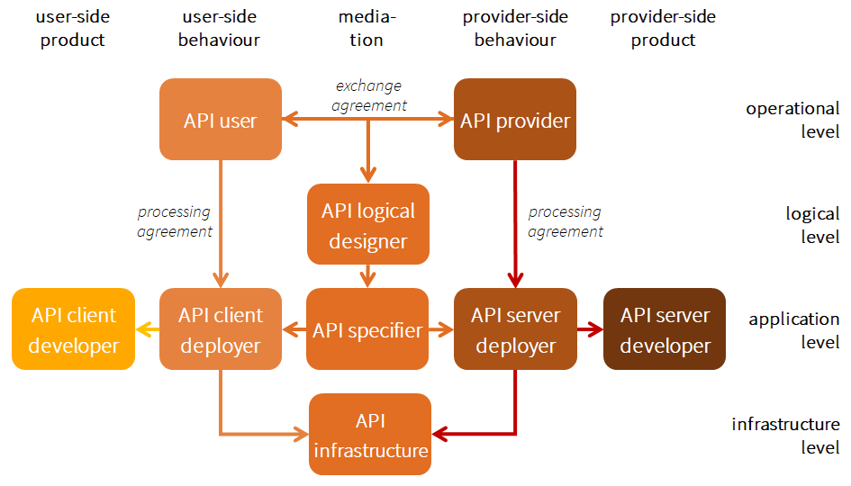
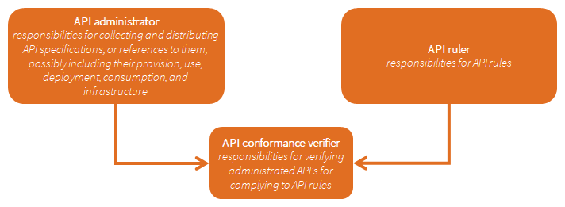

API-architectuur
Definitie en verschijningsvormen van API's
Definitie
Met een application programming interface (API) ontsluit een softwareapplicatie functionaliteit voor gebruik door andere softwareapplicaties, zonder die andere applicaties te belasten met hoe die functionaliteit wordt uitgevoerd.
Aanbieder en afnemer
API's hebben aanbieders en afnemers. Een aanbieder ontsluit een functionaliteit (volgens de API-specificatie). Een afnemer gebruikt deze functionaliteit door een API aan te roepen. Afnemers kunnen meer API's aanroepen en bij verschillende aanbieders.
Verschijningsvormen: overeenkomst, specificatie, deployment en implementatie
Een afnemer gaat met de aanbieder een API-overeenkomst aan. Daarin staan hun afspraken over de functionele en niet-functionele kenmerken van de API en gebruiks- en leveringsvoorwaarden. De term overeenkomst mag breed worden opgevat. Als een partij aanbieder en afnemer tegelijk is, betreft de overeenkomst een intern architectuurbesluit.
De functionaliteit wordt beschreven om andere applicaties te laten weten wat hun wordt aangeboden en hoe zij hierop kunnen aansluiten. Die technische specificatie is de API-specificatie. Zowel aanbieder als afnemer moet software hebben draaien die het eigen aandeel in het API-verkeer afhandelt: de API-deployments. Die gebruiken softwareproducten waarin de API-specificatie zijn ingebouwd: de API-implementaties.
Bij elke API-specificatie horen één of meer API-implementaties en bij elke API-implementatie horen één of meer API-deployments. Idealiter hoort bij elke API-deployment een API-overeenkomst1. Een API-overeenkomst betreft één of meer API-specificaties. Waar het onderscheid tussen specificatie, implementatie, deployment en overeenkomst niet van belang is, spreekt de API-strategie kortweg van een API. De verantwoordelijkheden die horen bij deze verschijningsvormen staan geordend in een rollenmodel (zie paragraaf 2.5).
De API-strategie betreft alle aspecten van API's die van belang zijn voor de interoperabiliteit tussen aanbiedere en afnemer. Daaronder vallen:
- de gegevens en acties;
- alle technische eigenschappen van de API die een potentiële API-afnemer moet kennen;
- de processen rondom API-specificatie en -documentatie.
Op onderdelen kunnen API-specificaties verwijzen naar breder toepasbare specificatie-onderdelen (en uiteindelijk naar internationale technische basisstandaarden).
Typologieën van API's
De internationale gemeenschap classificeert API's op verschillende manieren. Het algemene deel van de Nederlandse API-strategie2 biedt daarvan goede voorbeelden:
- interne – en externe API-overeenkomsten;
- unrestricted-use en restricted-use API deployments;
- interactiepatronen;
- system −, process − en convenience API's.
Interne en externe API-overeenkomsten
De Nederlandse API-strategie onderscheidt interne en externe API's. Interne API's vinden toepassing binnen één organisatie; externe API's worden gebruikt voor verkeer tussen organisaties. Als de inhoudelijk eindverantwoordelijke aanbieder dezelfde partij is als de inhoudelijk eindverantwoordelijke afnemer, werkt die partij met interne API's. Zijn aanbieder en afnemer verschillende partijen dan spelen tussen die partijen externe API's.
Het onderscheid tussen intern en extern is een kwestie voor de API-overeenkomst. Dezelfde API-specificatie, API-implementatie of API-deployment kan zowel extern als intern worden ingezet. Die vrijheid wil de API-strategie ook behouden. Hooguit waar eisen aan API-overeenkomsten worden gesteld, kan het onderscheid aan de orde komen.
Unrestricted − en restricted-use API-deployments
De Nederlandse API-strategie verdeelt externe API's in open3 en gesloten API's. Bij gesloten API's gelden voorwaarden om de gespecificeerde functionaliteit te mogen gebruiken. Voor de verificatie van het recht op gebruik zijn ook autorisatie-API's en authenticatie-API's nodig. Bij open API's (gebruikt voor bijvoorbeeld open data) ontbreken toegangsvoorwaarden en ontbreekt de behoefte aan autorisatie en authenticatie. Internationaal echter betekent open API iets anders. Omdat de API-strategie voor de zorg de internationale termen wil overnemen, gebruikt zij voor het onderhavige onderscheid de termen unrestricted-use API en restricted-use API.
Het onderscheid tussen unrestricted-use en restricted-use API's speelt uiteindelijk bij een API-deployment. Daarin krijgt toegangsbeleid zijn beslag, dat in voorafgaande API-overeenkomsten, API-specificaties en API-implementatie vorm heeft gekregen.
De Nederlandse API-strategie verdeelt de restricted-use API's naar de betrokken partijen: burger, bedrijf, overheid. Het is de vraag of deze driedeling zinvol is voor de doelen van de API-strategie voor de zorg. In de zorg springen natuurlijk allereerst de zorgaanbieder en de patiënt (of anders genoemd) in het oog. Maar ook andere organisatiesoorten spelen een belangrijke rol in het zorginformatieverkeer: overheidsuitvoerders, verzekeraars, kwaliteitsregistraties, onderzoeksorganisatie en andere. De API-strategie voor de zorg maakt op voorhand geen keuze voor typen partijen in het zorginformatiestelsel, zorgsectoren of dergelijke. De kans bestaat zelfs dat API's die bedoeld zijn voor patiënt-zorgaanbiederverkeer ook bruikbaar zijn voor ander verkeer.
Interactiepatronen
API's verschillen ook in hoe client en server afstemmen wanneer en welke gegevens uitgewisseld moeten worden. De client weet welke gegevens hij nodig heeft, de server weet wanneer die beschikbaar zijn. In het meest eenvoudige patroon (pull-patroon of polling) vraagt de client en antwoordt de server. Nadeel daarvan is dat, wanneer er helemaal geen nieuwe gegevens blijken te zijn, de client het later nog eens moet proberen. Dat kan leiden tot onnodig vraag−antwoordverkeer4.
Een ander patroon is het push-patroon waarin de server het initiatief neemt op het moment dat nieuwe gegevens beschikbaar zijn. De server stuurt naar de clients die daarvoor staan geregistreerd, het bericht dat er wijzigingen zijn en welke. Ook hieraan kleven in sommige situaties nadelen. Omdat de client weet welke gegevens hij wanneer nodig heeft, kan het tweede deel van de boodschap (wat de wijzigingen zijn) voorbarig worden.
Een subtieler patroon is de pull-notificatie of notified-pull. De server vertelt de client eerst dát er nieuwe gegevens beschikbaar zijn (de notificatie). In reactie daarop vraagt de client op door hem gekozen momenten deze of andere servers de gegevens. Door de scheiding tussen dát en wát is dit patroon het meest geraffineerd in de afstemming tussen client en server en in de mogelijkheden voor dataminimalisatie. Bovendien is dit patroon veiliger omdat de client gevraagd kan worden zich opnieuw te authentiseren voordat de gegevens zelf worden gestuurd.
De API-strategie voor de zorg kent vooraf geen voorkeur voor een van deze drie patronen. Het derde patroon spreekt de client en server het meest precies aan: de cliënt voor het wát, de server voor het dát. Het pull-patroon legt beide bij de client, het push-patroon juist bij de server. Dat maakt deze twee eenvoudiger dan notified-pull. Al naar gelang de situatie geniet één van de drie de voorkeur.
System API's, process API's en convenience API's
Een andere indeling is die naar kolom (tier) in de software-architectuur (van betrokken applicatie) waarop de API aangrijpt. Een system API grijpt aan op de database, een process API op de business logica en de convenience of experience API op de user interface.
Dit onderscheid is in de API-strategie voor de zorg van groot belang. Het onderscheid tussen system API en process API weerspiegelt het onderscheid tussen verwerking van informatie (links in afbeelding 1) en uitwisseling van informatie (rechts in afbeelding 1) in het zorginformatiestelsel.5

Afbeelding 5: Positie van API's in het zorginformatiestelsel.
De huidige behoefte aan informatiebeschikbaarheid maakt dit onderscheid actueel en legt de nadruk op data-API's, hoewel de API-strategie ook transactie-API's betreft.
De nationale API-strategie onderscheidt ook business en exposure API's. De functionaliteit van business API's omvat specifieke (proces)aspecten. Bij exposure API's ontbreken die en is de functionaliteit algemeen en gegevensgericht. Zo'n onderscheid mist scherpte, lijkt op het vorige onderscheid en is daarom vooralsnog niet van waarde in de API-strategie voor de zorg.
Open API's, technisch gestandaardiseerde API's en volledig gestandaardiseerde API's
De doelstelling van de API-strategie geeft aanleiding om drie kwaliteitstreden te onderscheiden: open API's, technische gestandaardiseerde API's en volledig gestandaardiseerde API's (afbeelding 2). Voor een beschrijving zie paragraaf 1.2.
Tot slot
Van de hier benoemde typologieën spelen er dus twee een funderende rol in de API-strategie voor de zorg:
- het architectuur-onderscheid tussen data-API's en transactie-API's (afbeelding 1);
- het kwaliteits-onderscheid tussen open API's, technisch gestandaardiseerde API's en volledig gestandaardiseerde API's (afbeelding 2).
Beide typologieën betreffen allereerst API-specificaties, maar gelden ook voor de API-implementaties en API-deployments die gebaseerd zijn op zo'n API-specificatie.
API-paradigma's en technologiestandaarden
Met een API ontsluit een softwareapplicatie functionaliteit aan andere softwareapplicaties, zonder die andere applicaties te belasten met hoe dat precies gebeurt. Belangrijk daarbij is hoe beide zijden aankijken tegen functionaliteit of welk paradigma zij gebruiken voor functionaliteit. Zo zijn er bijvoorbeeld (zonder te pretenderen een definitieve en complete lijst te geven):
- het berichten-paradigma: via een API stuurt de ene applicatie een bericht naar de andere. Bekende technologiestandaarden voor dit paradigma zijn HL7v2, FHIR Messaging en EDIFACT;
- het document-paradigma: via een API stuurt de ene applicatie een document naar de andere. Bekende technologiestandaarden voor dit paradigma voor de zorg zijn HL7-CDA, XDS en FHIR Documents;
- het procedure-paradigma: via een API zet de ene applicatie een procedure bij de andere in gang. Een bekende technologiestandaard voor dit paradigma is SOAP;
- het resource-paradigma: via een API spreekt de ene applicatie een gegevensbron aan bij de andere. De API wordt dan RESTful genoemd. Bekende technologieën voor dit paradigma zijn OpenAPI6 en − voor de zorg − HL7-FHIR;
- het query-paradigma: via een API bevraagt de ene applicatie een samenhangend geheel van gegevensbronnen bij andere. Bekende API-technologieën in dit paradigma zijn SPARQL en GraphQL.
Een keuze voor een API-paradigma is voor de software-architectuur van groot belang en verdient expliciete aandacht. De paradigma's verschillen vooral in de verdeling van basisverantwoordelijkheden tussen server en client, bijvoorbeeld voor het bijhouden van status of het samenstellen van data uit onderdelen. In het ene paradigma ontslaat de server de client meer van dergelijke verantwoordelijkheden dan in het andere paradigma, maar trekt daarmee ook meer controle naar zich toe. Bij elk paradigma hoort een eigen verzameling technische standaarden die de verschillende paradigma-kenmerken standaardiseren. Voorbeelden zijn communicatieprotocollen en coderingsstandaarden. Maar vaak gebruiken verschillende paradigma's dezelfde technische standaarden.
De geschiedenis laat een evolutie zien in de populariteit van de paradigma's: van het bericht-paradigma, via het document-paradigma naar het momenteel populaire resource-paradigma. Ondertussen lijkt het query-paradigma aan populariteit te winnen. Door deze wereldwijde en zorg-overstijgende dynamiek in API-paradigma's kan en moet een API-strategie voor de zorg met een rollende API-technologie-agenda (paragraaf 1.4) de wereldwijde API-ontwikkelingen volgen en vertalen naar de actuele behoefte van het Nederlandse zorginformatiestelsel. De API-eisen zullen waar nodig aangeven voor welk paradigma of welke technologie zij zijn bedoeld.
Infrastructuur
API's zijn ook in te delen naar de infrastructuren waarover zij werken. De API-strategie voor de zorg richt zich allereerst op API's over infrastructuren die zich laten gebruiken volgens het HTTP-protocol. Het meeste internetverkeer is HTTP-verkeer. Het internet wordt echter ook gebruikt via andere application-layer7 protocollen zoals SMTP of FTP. Veel API's (zoals die gebaseerd op SOAP) werken over zowel HTTP als SMTP en FTP. RESTful API's werken alleen over HTTP, omdat zij aan HTTP methods functionele betekenis hechten.
De voorlopige nadruk van de API-strategie op HTTP-gebaseerde API's is een pragmatische keuze. Die is ingegeven door behoefte aan (technische) scopebeperking en door de wetenschap dat de meeste API's binnen en buiten de zorg over HTTP worden aangeboden. Het streven is om de API-eisen zo op te zetten, dat uitbreiding eenvoudig mogelijk is, bijvoorbeeld naar op SMTP-gebaseerde eisen.
Rollen
Om API-eisen te formuleren is een rollenmodel nodig. Een rol is een set verantwoordelijkheden, bedoeld om individuele partijen aan te binden of zich te laten binden. Een partij kan elke combinatie van rollen spelen, behalve waar dat nadrukkelijk wordt uitgesloten.
Afbeelding 6 toont een rollenmodel dat een detaillering is van de rollen die al in afbeelding 3 stonden genoemd. De API user en API-provider zijn samen de API agreement holder. De pijlen staan voor rol-relaties. Een eenzijdige pijl van rol A naar rol B betekent dat de verantwoordelijkheden van rol B die van rol A respecteren (rol-hiërarchie, verticaal). Een tweezijdige relatie staat voor wederzijds respect voor elkaars verantwoordelijkheden (contract-relatie, horizontaal).

Afbeelding 6: Rollen in de API-strategie.
Verticale relaties weerspiegelen de gelaagdheid van het zorginformatiestelsel: conceptueel-logisch-applicatie-infrastructuur. Horizontaal onderscheidt het model de gebruikende kant (links) van de aanbiedende kant (rechts), met per kant een gedragskolom met erachter een productkolom. In het midden een bemiddelende kolom. De verantwoordelijkheden van deze rollen staan beschreven in Bijlage C.
De API-strategie kent enkele meta-rollen met verantwoordelijkheden voor de API-strategie zelf: verantwoordelijkheid voor administratie van API's in een bibliotheek, verantwoordelijkheid voor het opstellen van de API-eisen en verantwoordelijkheid voor het verifiëren van API's.

Afbeelding 7: Meta-rollen in de API-strategie.
Een API-eis wordt opgelegd aan één rol. Hierop zijn twee uitzonderingen:
- Wanneer een eis de interactie betreft tussen server- en client-zijde kunnen de betreffende varianten van developer- en deployer-rollen samen worden aangesproken.
- Wanneer een eis de afhankelijkheid betreft tussen verschillende verschijningsvormen van API's (bijvoorbeeld tussen API-implementatie en API deployment) kunnen bijbehorende rollen samen worden aangesproken.
Principes en uitgangspunten
Voor de uitwerking van de API-strategie gelden principes en uitgangspunten (zie tabel 1).
| Aspect of kenmerk | Principe | Zie | |
|---|---|---|---|
| 1 | rolvastheid in het stelsel | Een API-specificatie laat kenmerken die niet bij die API horen (op grond van afbeelding 1) over aan toepasselijke andere elementen van het zorginformatiestelsel. Dit gebeurt ook als de API afhankelijk is van deze elementen en ook als die elementen nog ontbreken. | paragraaf 1.1 |
| 2 | scheiding van logica | De technische API-specificaties zijn gescheiden van de logische (gegevens- en transactie)modellen die zij implementeren (afbeelding 1). | paragraaf 1.1 |
| 3 | kwaliteitsniveaus | De API-strategie hanteert drie niveaus (treden) voor de mate waarin een API voldoet aan een set API-eisen (afbeelding 2). | paragraaf 1.2 |
| 4 | implementatie-onafhankelijkheid | Een API-specificatie is op het hoogste kwaliteitsniveau onafhankelijk van specifieke API-implementaties (software). | paragraaf 1.1 |
| 5 | scheiding van infrastructuur8 | Een API is gescheiden van de infrastructuur waarover de API wordt afgehandeld (afbeelding 1). | paragraaf 2.4 |
| 6 | eisen en rollen | Elke API-eis hoort bij voorkeur bij één rol of bij zo min mogelijk rollen uit het rollenmodel (afbeelding 4). | paragraaf 2.5 |
| 7 | autorisatiebeleid | Elke API deployment functioneert onder een autorisatiebeleid (restricted use API's). | paragraaf 2.2 |
| 8 | paradigma-afhankelijkheid | Een API-eis kan passen bij één of meer API-paradigma's. | paragraaf 2.3 |
Tabel 1: Principes voor de API-strategie voor de zorg.
API's voor databeschikbaarheid
API's zijn van strategisch belang voor databeschikbaarheid in het licht van het zorginformatiestelsel (paragraaf 1.1). Men kan overwegen om als principe op te nemen dat applicatiesystemen hun data, en eventueel sommige transacties, moeten aanbieden via een API (tabel 1), een API die bovendien moet voldoen aan de API-eisen. Zo wordt bestreden dat applicatiesystemen hun data gevangen houden binnen hun systeemgrenzen (information blocking).
De API-strategie kan echter het voor het zorginformatiestelsel strategische doel databeschikbaarheid niet alleen dragen, ook al verzorgt de API-strategie wezenlijke technische voorwaarden voor databeschikbaarheid. Hiervoor zijn twee redenen.
- Ten eerste is databeschikbaarheid een informatie-inhoudelijke doelstelling die om afspraken vraagt op de hogere niveaus van afbeelding 1 (paragrafen 1.1 en 1.2). Anticiperend op zulke afspraken kan een API-strategie voorwaarden scheppen op systeemniveau. Bovendien kan zij de noodzaak van zulke hoger-niveau afspraken urgenter maken, door technologisch gedreven innovatie te stimuleren. Maar via een louter technologische weg kan de API-strategie geen databeschikbaarheid bewerkstelligen.
- Ten tweede vraagt databeschikbaarheid uiteindelijk om een meer genuanceerde strategie dan een verplichting tot het ontsluiten van alle data van alle applicaties. Een passende strategie voor databeschikbaarheid moet zeggen welke verantwoordelijken vanuit welke soorten applicatie welke informatie in welke situaties voor welke doelen ter beschikking moeten stellen aan welke anderen onder welke voorwaarden. Hoezeer men ook vanuit secundaire informatiebehoeften ongespecificeerd aanspraak doet op databeschikbaarheid. Zo'n passende strategie voor databeschikbaarheid moet men nastreven met een brede stelselstrategie, een stelselregie die stoelt op een uitgewerkte visie op informatie(her)gebruik.
Hoe kan deze API-strategie toch − binnen haar eigen grenzen − maximaal bijdragen aan databeschikbaarheid? Daarvoor helpt het de afhankelijkheid van te specifieke informatiebehoeften te beperken (punt twee hierboven). Dat kan door je te concentreren op generieke informatiebouwstenen en databeschikbaarheid te bevorderen per bouwsteen met een API voor die informatiebouwsteen. Dit vraagt om een strategische samenwerking met de huidige parallel lopende ontwikkeling van een zib-strategie. Dat vereist dan om, op basis van een generiek conceptueel informatiemodel, informatiebouwstenen-nieuwe-stijl aan te wijzen en te definiëren. Daarna kan per bouwsteen een API gespecificeerd worden. De zib-strategie vertegenwoordigt zo de conceptuele en de logische niveaus van afbeelding 1 en vult daarmee het eerste punt van hierboven in: de afhankelijkheid van hogere niveaus.
Binnen de API-strategie kunnen zich − na identificatie van informatie-bouwstenen-nieuwe-stijl − typen API's aandienen voor opname in de API-bibliotheek. Deze opname start op de eerste trede. Daarbij vormen Wegiz-verplichtingen een belangrijke stimulans. Voor doorgroei naar de derde trede (volledig gestandaardiseerde API's) is nodig dat die informatiebouwstenen-nieuwe-stijl niet alleen geïdentificeerd zijn, maar ook gespecificeerd en afgebeeld op een API-specificatie.
Zie ook Bijlage A.
Naar samenhangende deelstrategieën
De API-strategie is gepositioneerd op het systeemniveau (afbeelding 1). Dat biedt houvast bij de vormgeving van de API-strategie. Dat begrenst het werkingsgebied van de API-strategie, maar ook wat ervan verwacht mag worden. Die begrenzing is een natuurlijke voorwaarde voor de effectiviteit van de API-strategie, in relatie tot omliggende strategieën.
Hier kan een landschap worden geschetst van inhoudelijke strategieën waarvan de API-strategie er één is. Dit landschap volgt de niveaus van het specificatiecanvas uit de stelselarchitectuur-visie9. Elk niveau beschouwt een aspect van alle informatie die omgaat in het zorginformatiestelsel (afbeelding 8).

Afbeelding 8: Vijf deelstrategieën.
Hierbij horen enkele toelichtende opmerkingen. De zib-strategie is pril. Hoewel het denken zich beperkt heeft tot het logische niveau, ontstaat het bewustzijn dat een gezamenlijk conceptueel model nodig is. Het conceptuele gehalte van dit model zal bepalen of de zib-strategie zich ook op dat niveau gaat begeven, of dat een aparte deelstrategie voor het conceptuele niveau nodig is.
Een informatiebeleid-strategie en infrastructuurstrategie worden nog niet als zodanig onderkend. Elementen hiervan kleuren evengoed al jaren het debat over het zorginformatiestelsel. Deze twee niveaus zijn het minst afhankelijk van de specifieke complexiteit van informatie en daarom wellicht het snelst en eenvoudigst opgeworpen. Daaronder zou de verwachting kunnen schuilgaan dat met deze 'deksel' en 'bodem' van het specificatiecanvas ook de uitdagingen van de middelste drie niveaus kunnen worden beslecht. Dat zou een onderschatting zijn. Het is eerder andersom: organisatie en infrastructuur zijn letterlijk de sluitstukken van het stelsel. De informatie in het midden vormt de kern.
De term infrastructuur is aanzienlijk vertroebeld in het debat over het zorginformatiestelsel. In het kader van de API-strategie verstaan we daaronder alle systemen waarover API's worden afgewikkeld, ongeacht om welke API het precies gaat. De term infrastructuur zegt zo dus nog niets over hoeveel partijen haar (zouden moeten) gebruiken.
Eerder adviesrapport
Het adviesrapport10 dat de aanleiding is voor deze API-strategie, doet zes aanbevelingen. Aanvullend staat hier hoe deze API-strategie zich daartoe verhoudt.
- Stimuleer de ontwikkeling van een API-strategie voor de zorg en zorg daarbij voor een brede vertegenwoordiging van het veld. Hieraan geeft deze API-strategie opvolging.
- Stimuleer vroegtijdige opname van API's in de API-bibliotheek om de meerwaarde van een API-bibliotheek en mogelijkheden van hergebruik aan te tonen. Dit krijgt opvolging in paragraaf 1.4 en in een apart document.
- Stuur op een groeimodel van niet-gestandaardiseerde API's naar gestandaardiseerde API's zodat zowel de innovatiekracht van leveranciers als de interoperabiliteit in het stelsel is geborgd. Dit krijgt opvolging in paragrafen 1.2 en 1.4 en in een apart document met API-eisen.
- Onderken de verschillen tussen zibs, API's, applicaties en infrastructuur en zorg voor borging in het duurzame informatiestelsel. Dit krijgt in paragraaf 2.8 opvolging.
- Onderzoek welke onderdelen van de API-strategie normatief kunnen worden verklaard. In de stelselarchitectuur-visie wordt wet- en regelgeving als sluitstuk gezien van beleidsvorming. Daar waar noodzakelijke kwaliteiten meer vragen dan regulier beleid, is normering aan de orde.
- Zorg ervoor dat normen voor generieke functies leiden tot implementaties die breed bruikbaar zijn in de zorg, zodat ook API's daarvan gebruik kunnen maken. Dit moet onderdeel zijn van een strategie voor generieke functies, al dan niet als onderdeel van een brede strategie voor het zorginformatiestelsel.
Hetzelfde adviesrapport somt drie groepen adviezen op die gelden als vertrekpunt voor de uitwerking van de API-strategie en haar middelen. De eerste groep adviezen vloeit voort uit de wensen van zorgprocessen en zorgaanbieders (tabel 2) en vraagt daarom allereerst om afspraken op de hogere niveaus (afbeelding 1). Afspraken die doorwerken op API's (zie paragraaf 2.7).
Een tweede groep adviezen vloeit voort uit de wensen van softwareleveranciers (tabel 3). Aan deze groep wensen komen de in hoofdstuk 1 genoemde strategische middelen van de API-strategie tegemoet: de API-eisen, de API-bibliotheek en de API-technologie-agenda.
Voor een laatste groep wensen over het zorginformatiestelsel (tabel 4) geldt hetzelfde als voor de eerste groep. Veel adviezen in deze tabellen worden dus geraakt met de vierde hoofdaanbeveling: onderken de verschillen tussen zibs, API's, applicaties en infrastructuur en zorg voor borging in het duurzame informatiestelsel.
| Advies | |
|---|---|
| ontwerp | Ontwerp API's zo dat ze een betekenisvolle set van gegevens ontsluiten. |
| ontwerp | Zorg voor flexibiliteit in de gegevens die API's ontsluiten. API's bevatten voldoende filtermogelijkheden om de juiste informatiebehoefte te dekken en voldoende selectiemogelijkheden op de gegevenselementen die beschikbaar gesteld worden. Houd hierbij rekening met autorisatie, capaciteit, doseerbaarheid, et cetera. |
| ontwerp | Ontsluit in een API gegevens die voldoende rijk zijn. Daarmee kan men eenvoudig doorvragen naar aanvullende informatie en makkelijk vervolgvragen stellen en beantwoorden. |
| ontwerp | Bied API's aan die nieuwe of gewijzigde gegevens actief uitsturen (push) om afhankelijke toepassingen en processen te voeden (bijvoorbeeld Acute zorg, AI-modellen of datawarehouses). |
| ontwerp | Geef in API-specificaties informatie over de betrouwbaarheid van de gegevens en transparantie over het toegangsbeleid. Afnemers om commerciële redenen uitsluiten is niet toegestaan. |
| toepassing | Maak API's herbruikbaar voor verschillende toepassingen zoals primaire zorg, managementinformatie, kwaliteitsregistraties en wetenschappelijk onderzoek. |
| toepassing | Geef de API-eisen dusdanig vorm dat ze van toepassing zijn op API's van informatiesystemen, (regionale) platformen en portalen. |
| toepassing | Bied (convenience) API's aan voor bijvoorbeeld wetenschappelijk onderzoek of kwaliteit die een mogelijkheid bieden voor anonieme of gepseudonimiseerde ontsluiting van gegevens. |
| beleid | Werk uit hoe API's gebruik maken van generieke functies en voorzieningen voor bijvoorbeeld identificatie, authenticatie, autorisatie, toestemming en logging. Ook leveranciers hebben deze behoefte geuit. De functies zijn nodig om te voldoen aan wet- en regelgeving bij gegevensuitwisseling. |
| beleid | Geef richting aan de keuzes op de applicatie-laag van het meer-lagenmodel. Daarbij is de keuze voor internationale standaarden zoals Open API en HL7 FHIR preferent en kunnen we leren van ervaringen uit andere landen. |
| beleid | Bied kaders en handreikingen aan de technische specificaties voor het ontsluiten van zowel losse concepten (bijvoorbeeld zibs) als composities (bijvoorbeeld medicatieoverzicht of zwangerschapskaart). |
| beleid | Wees leveranciers-onafhankelijk en voorkom information blocking. API-eisen en API-specificaties in de bibliotheek trekken geen leveranciers voor en zijn niet beperkt tot gebruik door één leverancier. Leveranciers onderscheiden zich op bijvoorbeeld functionaliteit, user interface en dienstverlening. Zorgaanbieders houden de keuzevrijheid om van verschillende aanbieders gebruik te maken. |
Tabel 2: Geadviseerde eisen van zorgprocessen en aanbieders.
| Advies | |
|---|---|
| ontwerp | Maak gebruik van internationale standaarden en sluit aan bij ontwikkelingen die in het buitenland spelen. HL7 FHIR mag niet ontbreken in de strategie; voor bestaande API's die gebaseerd zijn op andere standaarden moeten keuzes worden gemaakt en een migratie-strategie worden geformuleerd. |
| ontwerp | Maak eenduidige afspraken over releasemanagement en versionering van API's. |
| ontwerp | Verplicht het beschikbaar stellen van een testomgeving voor API's. |
| ontwerp | Onderzoek de mogelijkheden voor een gedeelde ontwikkelomgeving of tooling. |
| beleid | Stimuleer het hergebruik van API's voor verschillende informatiebehoeften. |
| beleid | Bied ruimte voor innovatie en standaardisatie door ondersteuning van zowel gestandaardiseerde als niet-gestandaardiseerde API's. |
| beleid | Stimuleer hergebruik van bestaande API's en ondersteun daarin ook het doorgroeien van niet-gestandaardiseerde API's naar gestandaardiseerde API's. |
| beleid | Stel API-specificaties kosteloos ter beschikking. Onderzoek voor het gebruik van API's of publieke of private afspraken nodig zijn. |
Tabel 3: Geadviseerde eisen van leveranciers.
| Advies | |
|---|---|
| ontwerp | Baseer de beschrijving van de gegevens die API's aanbieden op bouwstenen uit de informatie-laag (zibs). |
| ontwerp | Baseer de maatvoering van API's op een of meerdere zibs in combinatie met de maatvoering in de gebruikte communicatiestandaard. |
| toepassing | Gebruik bij de ontwikkeling van informatiestandaarden zoveel mogelijk bestaande API's. |
| toepassing | Gebruik filters en selecties op bestaande API's voor een toepassing-specifieke invulling in plaats van het ontwikkelen van nieuwe API's. |
| toepassing | Introduceer hergebruik om kwalificatie te vereenvoudigen: splitskwalificatie van de techniek door generieke API's en de toepassings-specifieke invulling aanvullend op elkaar te kwalificeren. |
| beleid | Beschrijf in de API-strategie hoe API's zich verhouden tot andere onderdelen in het duurzame informatiestelsel. |
| beleid | Breid de huidige bouwstenen op de informatie-laag uit zodat ontbrekende gegevens (bijvoorbeeld procesgegevens, contextgegevens, identificaties en relaties naar andere zibs) beschikbaar zijn voor toepassing in API-specificaties. |
Tabel 4: Geadviseerde eisen in relatie tot het zorginformatiestelsel.
-
Als eenzelfde partij aanbieder en afnemer is, staat de term API-overeenkomst voor interne architectuurbeslissing. ↩
-
Zie Typologie van API's. ↩
-
Niet te verwarren met de technologie OpenAPI uit paragraaf 2.4. ↩
-
HTTP kent technische mogelijkheden voor het beperken van dit verkeer aan de server-zijde, namelijk met het in de cache identificeren van versies van resources, met een zogenoemde ETag. ↩
-
Afbeelding 1 noemt system API's en process API's data-API's en transactie-API's. Engelstalige teksten gebruiken de in de software-community gangbare termen. ↩
-
Ook wel Swagger genoemd en niet te verwarren met de term open API die deze API-strategie hanteert voor de eerste trede van het API-groeipad (afbeelding 2). ↩
-
Deze term komt uit het OSI-model en moet niet worden verward met de applicatielaag van bijvoorbeeld het Nictiz-vijflagenmodel. OSI gaat alleen over infrastructuur: de application-layer protocollen zijn de protocollen die binnen de infrastructuur het dichtst tegen de applicaties aanliggen en hen in zekere zin 'direct' van dienst zijn. ↩
-
Deze term is in het veld onderhavig aan aanzienlijke vervaging. Hier wordt met deze term niet geappelleerd aan pretenties van brede toepassing of monopolisering van functionaliteit, maar aan het resultaat van het wegfilteren van applicatie-afhankelijkheid uit functionaliteit. ↩
-
Deze zal binnenkort verschijnen. ↩
-
Nictiz, Op weg naar een API-strategie voor de zorg, Adviesrapport aan Ministerie van VWS, versie 1.0, 17 december 2021 ↩